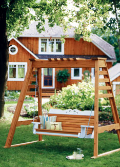
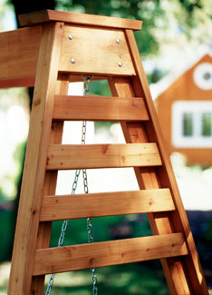
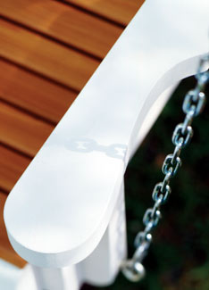
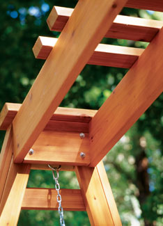
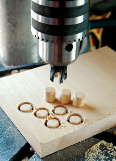

Do-It-Yourself Porch Swing
Everyone needs a cozy spot to relax and sip some iced tea, and this plan works even if you don’t have a porch!
By Steve Maxwell
August/September 2008
There’s nothing like enjoying a summer breeze while sitting in an outdoor swing you’ve built yourself. The design described here features a swing and matching support stand that are beautiful and easy to build. Most of the parts use standard construction-grade softwood and cedar lumber.
Some Tips Before You Start
Most joints in this project are glued and screwed together for strength and durability. But not all wood glue can last outdoors long term. The challenge is moisture, and that’s why this project requires an adhesive that’s specifically rated as weatherproof. Use wood glue carrying “type II” or “type III” water-resistance ratings, such as Gorilla wood glue.
This project includes a number of curved parts. For the best results, make full-size templates prior to cutting these items. One approach to templates involves enlarging the grid diagrams on quarter-inch plywood or hardboard, then cutting out the shapes and using them for tracing templates on your lumber. Download the full-size templates for the curved parts of this project. Print out the files, cut out the patterns and temporarily glue the outlines onto your wood as a guide for your jigsaw. After cutting the pieces, peel off the paper, sand away any glue residue and you’re ready to move on.
Start by studying the plans. Hidden components that must be especially strong are made of spruce or pine. More prominent parts are made of rot-resistant cedar.
Begin with the Seat
The first step is to build four L-shaped assemblies that support the seat and back of the swing, each made from one back support and one seat support. The two supports for the middle of the seat are shorter than the outside seat supports (see building diagram). Also, as you work, be sure to create two right-hand and two left-hand versions - carefully noting how the back supports overlap the seat supports. Use glue and four #10, 2 1/2 inch corrosion-resistant screws at each joint. The angled ends of these parts determine the angle of the back to the seat, and the recommended angle is included on the templates. A slight variation from the template would still work, but all four frames must be cut at the same angle.
You’ll need to decide how to deal with screws. You can drive them in the ordinary way and leave them exposed. But covering screw heads with wooden plugs creates a much more refined appearance. For information on making and using your own tapered wooden plugs, see “A Special Touch,” below.
Arrange all four L-shaped assemblies upright on your work surface and parallel with each other, just as they’ll be in the finished project. There should be 16 inches between each back support member, totaling an overall length of 54 inches. Connect these parts using glue and #10, 3-inch screws to fasten the back brace to the bottom back corners of all four L-shaped assemblies (lowest parts of the back supports and back ends of the seat supports). The bottom edge of the back brace should be flush with the bottom ends of the back supports. Also, the 16-inch spacing between each of the L-shaped assemblies is critical for a balanced look and proper support.
The front brace fastens to the front of the seat supports with glue and screws, but before you get this far you should do more than cut the front brace to length. It also requires a 10-degree bevel along the top edge, to match the angle where it will meet the front seat slat later. This might sound complicated, but it’s not. If you have a table saw, simply tilt the blade 10 degrees from vertical as you cut the top edge of the front brace. You could achieve similar results using a hand plane. When it’s time to secure the front brace with glue and screws, take another look at the plans. They show how this part fits between the two outside seat supports, tight to the front ends of the inside seat supports. A pipe clamp and extra hands make this work much easier.
To finish the main framework of the seat, secure the back top rail into the notches cut in the top ends of the back supports. Use glue and screws, as you did for the other joints.
Prepare the Arms
Use glue and #10, 3-inch-long screws to fasten the arm pieces. Cut both arm supports and fasten them to the outer faces of the outside seat supports 2 1⁄2 inches back from their front ends. (The front of each arm extends 2 1⁄2 inches ahead of the arm support.)
The swing requires reinforcement at the points where it is suspended from the support frame. The two arm brackets provide extra support for the front chains. Cut the brackets to size, round the bottom ends to a 2-inch radius and fasten them to the outside face of the arm supports, snuggly fitted against the underside of each arm. The back of the swing requires similar reinforcement with the two arm braces. Cut, shape and fasten (using #10, 3-inch screws and glue) all the parts of the arm at this stage.
All of the cedar back slats and five of the seat slats are the same width (2 1⁄4 inches). Two seat slats are 3 inches wide. Attach one of the wide seat slats to the front of the seat support frame, using two #10, 2-inch-long screws driven into pre-drilled holes at each end of the slat. Secure the other wide seat slat 1 1⁄2 inches ahead of the back supports. Space the remaining seat slats between these two, leaving a quarter-inch gap between them. Arrange them all without attaching them (so the spacing is right), then anchor the seat slats using one #10, 2-inch screw at each end. This process works well for the back slats, too, but first lay the seat on its back.
To complete the seat, add the decorative front top and base trim. If you’ve got a table mounted router, use a quarter-inch radius round-over bit to mill the exposed edges of these parts. You could also do a pretty good job with a hand plane. For best appearance, bevel the top edge of the front trim piece to match the 10-degree bevel you applied earlier to the front brace.
At this point, you can hang the swing from a porch, a big tree with a solid limb or an existing support frame. Otherwise you’ve got a bit more building to do.
Create the Support Frame
Each of the four legs of the support frame is made of two parts (a face leg and a stiffener) joined together into an L-shaped profile. Use glue and #10, 3-inch-long screws to join these parts. Cut the ends of the legs after joining the parts into an L shape (but don’t hit screws with the saw blade). The angles involved are important, and a compound miter saw is a big help in getting them right. The ends of the legs need to be angled in two directions to form a stable frame. You’ll get perfect results if you set your saw to a miter angle of 8 degrees from square, and a bevel angle of 15 degrees from square. Trim each leg so it’s 87 inches long, with end cuts parallel. The orientation of the legs as you cut the ends determines which way the legs face in the finished structure. Be certain to produce two left-hand and two right-hand legs.
After the legs are cut, lay opposite pairs of legs on a flat surface, with stiffeners facing down. Spread the bottom ends of the legs 60 inches apart, then cut and fit the top braces between the top ends of the legs. Use glue and #10, 2-inch screws to anchor the top braces.
The two base pieces hold the legs the correct distance apart and provide solid footing for the support frame. Cut them to length with ends trimmed 15 degrees to match the angle of the leg frame. Fasten the base parts to the bottom ends of the legs, maintaining the 60-inch distance between them. The ends of the bases should extend 6 inches beyond the ends of each leg. You can add another board under each base piece. When these “sacrificial” boards rot, you can replace them easily.
Marine dock rings anchor the top ends of the support chains. Choose a design that includes a welded ring of steel set into a flat metal plate. Install the pull rings now, fastened to the inside faces of the top braces with bolts, not screws.
Attach all the remaining side braces next. You’ll want to cut them to fit your particular swing. Start by measuring 3 1⁄2 inches down from the bottom edge of the top brace, measure the distance between the legs, cut a pair of top side-braces to fit and secure them with glue and screws. Work down each leg frame, ladder-style. The bottom brace should be 24 inches from the bottom of the legs.
The legs are connected across the top by a support beam made from parts that work together to create strength without too much weight. Cut the front and back beam members with ends angled 8 degrees. Connect these parts with the beam end members, then secure the narrow top caps to the top surface of the beam. Leave the wide top caps off for now.
It’s time to join the leg frames and beam together, a job that goes much better with the help of extra hands. If you have a long pipe clamp, use it to hold together all the parts. The top edge of the beam needs to be flush with the top ends of the leg frames. Drill holes for four five-sixteenth-inch-by-5-inch-long carriage bolts through each top brace, stiffener and beam end. Use nuts and flat washers to secure each beam-to-leg frame joint. Finish up by installing both wide top caps so they overlap the outside faces of the frames 1 1⁄2 inches.
If you want to hide all screw heads under tapered wooden plugs, do that at this point.
As for finishing the wood, there are several good options and a few bad ones. Exterior grade penetrating oil offers one excellent approach. It’s easy to apply and never peels. Simply reapply oil whenever the wood begins to look dry. You could also leave the wood to weather naturally. You’d be wise to avoid any finish that forms a surface film. These invariably peel in time, and it would be difficult to scrape and strip the failing finish from the nooks and crannies in this swing and stand.
If the stand will be in one place for a season or more, you can easily train a vine to use it as a trellis. The additional shade (and possibly the fragrance of flowers) will make your time of relaxation all the more enjoyable.
One more important thing: Suspend the swing from chains with three-sixteenth-inch-diameter eyebolts. Now it’s time to settle in and swing!
A Special Touch
It’s amazing how much nicer projects look when you take the time and effort to hide screw heads beneath tapered wooden plugs that you cut yourself. The best approach begins by drilling a half-inch-diameter hole that’s a half-inch deep. Drive the screws into these holes as you’re working. Keep in mind that you need to use slightly shorter screws with this method or the tips of the screws will punch out the other side of the wood.
Use a tapered plug cutter in a drill press to produce wooden plugs from project scraps. Pry the plugs out with a screwdriver or small chisel. Apply a tiny bit of glue to the plugs as you tap them into place. You’ll get the best results if you orient the wood grain of the plugs so it’s parallel to the surrounding grain. Later, when the glue has dried, sand the plugs flush and the piece will be ready for finishing.
|
 MARK BURSTYN Relax and enjoy a summer breeze in this classic swing. |
 MARK BURSTYN Dock rings (hidden between the top brace of the legs and the support beam end) hold the top of the chains to the support frame. |
 MARK BURSTYN Curved cuts can be made based on the templates provided. |
|
 MARK BURSTYN Most of the project is joined using screws and glue, but the support beam is attached to the legs with carriage bolts. |
 MARK BURSTYN Extra attention to details makes the swing more visually appealing. |
 STEVE MAXWELL Using a tapered plug cutter, you can create wood plugs that closely match the lumber you use for the project. |